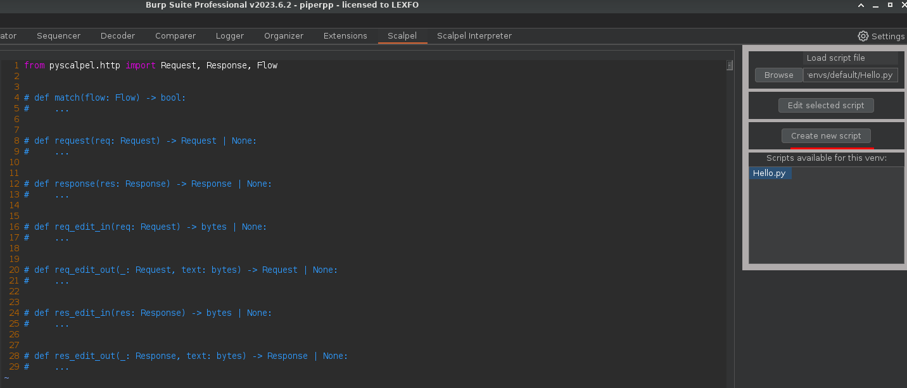
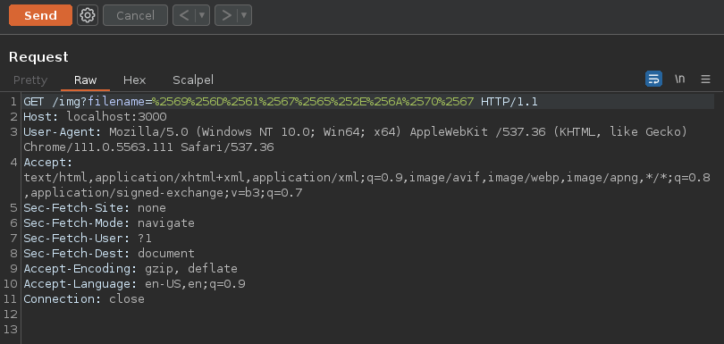
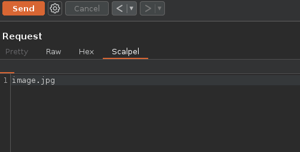
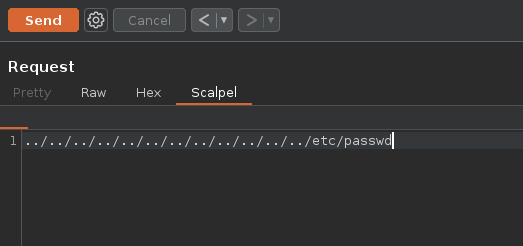
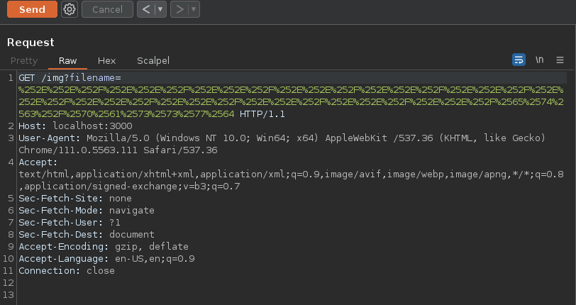

Scalpel allows you to programatically intercept and modify HTTP requests and response that goes through Burp as well as creating custom request/response editors with Python.
To do that you simply have to write a Python script containing your code in functions that follows defined names and load the file with Scalpel Burp GUI: 
You can intercept requests/response by creating a request() and response() functions in your script:
E.g: Hooks that adds an arbitrary header to every requests and response:
frompyscalpel.httpimportRequest,Response# Intercept the requestdefrequest(req:Request)->Request:# Add an headerreq.headers["X-Python-Intercept-Request"]="request"# Return the modified requestreturnreq# Same thing for responsedefresponse(res:Response)->Response:res.headers["X-Python-Intercept-Response"]="response"returnres
You can choose whether to intercept an HTTP message by declaring a match() function:
E.g: A match intercepting requests to localhost / 127.0.0.1 only
frompyscalpel.httpimportFlowdefmatch(flow:Flow)->bool:# True if host is localhost or 127.0.0.1returnflow.host_is("localhost","127.0.0.1")
Scalpel’s main killer feature is the ability to program your own editors using simple Python
E.g: A simple example script that allows you to edit a fully URL encoded query string parameter in a request:
frompyscalpel.httpimportRequestfrompyscalpel.utilsimporturldecode,urlencode_all# Hook to initialize the editor's contentdefreq_edit_in(req:Request)->bytes|None:param=req.query.get("filename")ifparamisnotNone:returnurldecode(param)# Do not modify the requestreturnNone# Hook to update the request from the editor's modified contentdefreq_edit_out(req:Request,modified_content:bytes)->Request:req.query["filename"]=urlencode_all(modified_content)returnreq
If you open a request with a “filename” query parameter, a “Scalpel” tab should appear in the editor 
Your req_edit_in() python hook will be invoked and the tab should contain the filename parameter URL decoded content 
Which you can modify to update the request and include anything you want (e.g: path traversal sequences) 
When you send the request or switch to another editor tab, your python hook req_edit_out() will be invoked to update the parameter. 
You can have multiple tabs by adding a suffix to your function names:
E.g: Same script as above but for two parameters “filename” and “directory”